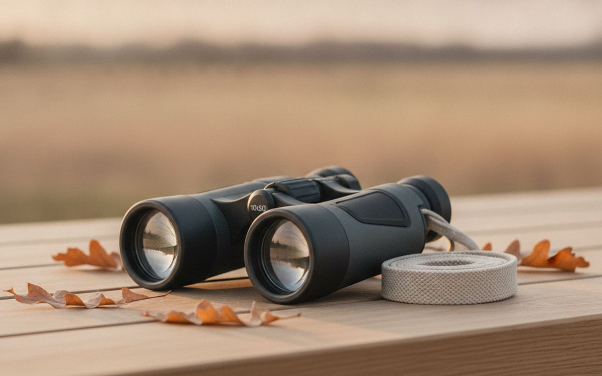
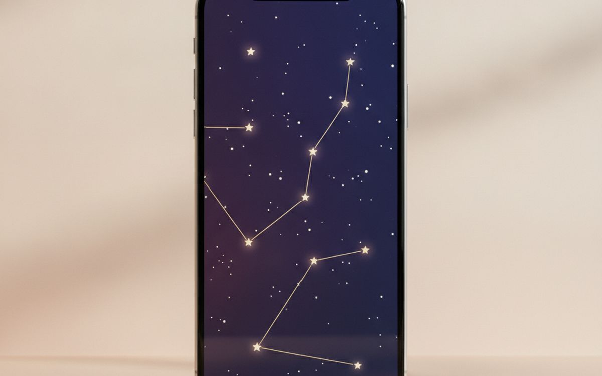
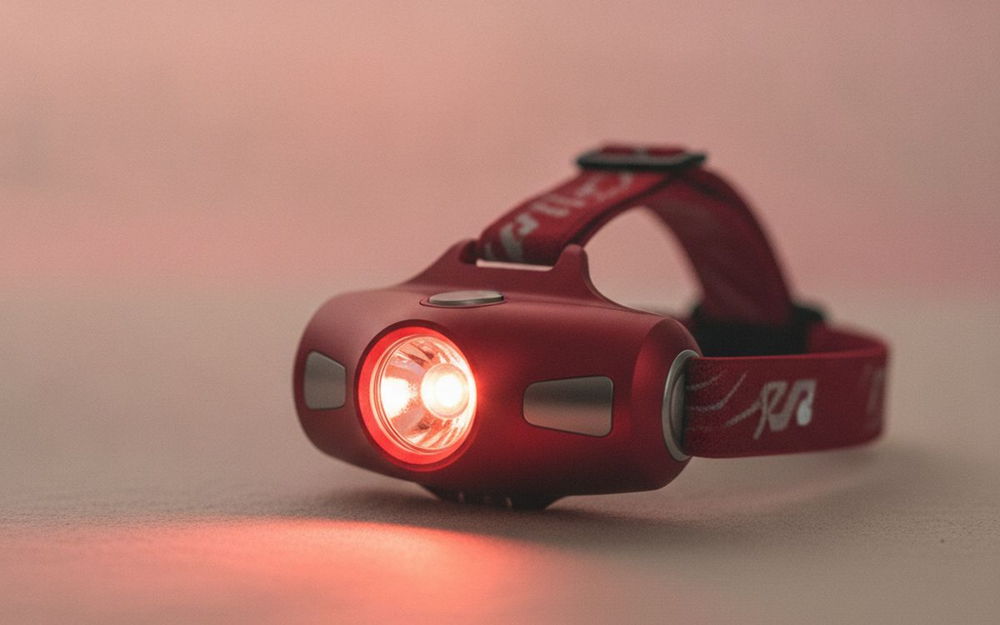
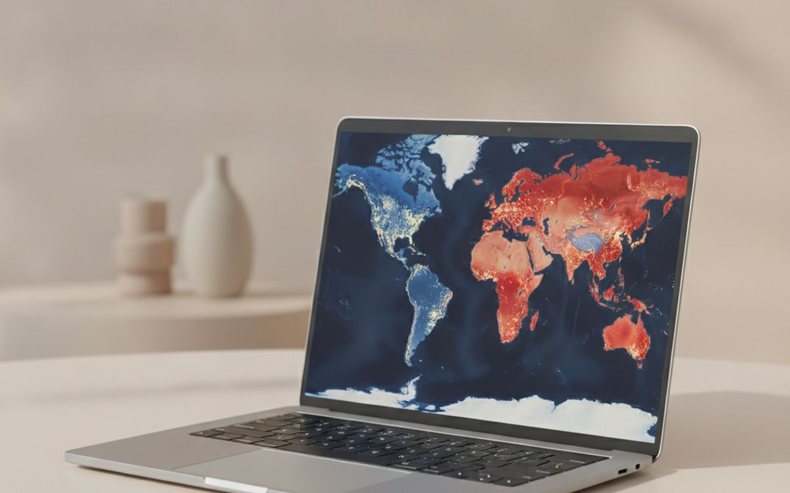
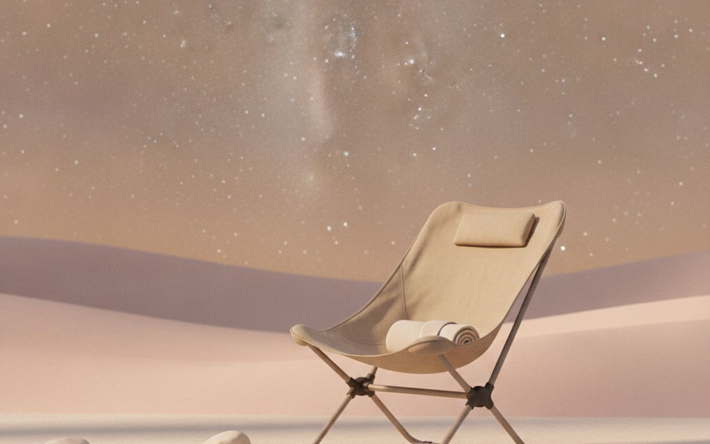
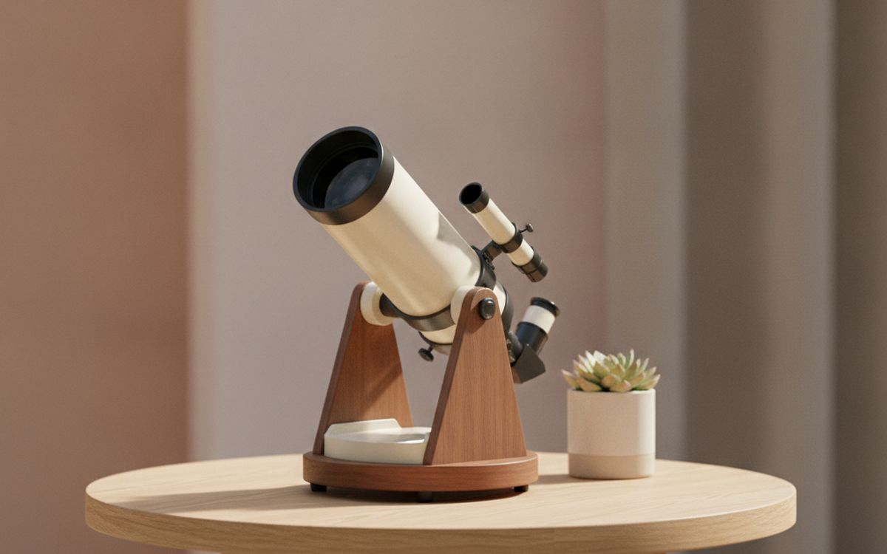
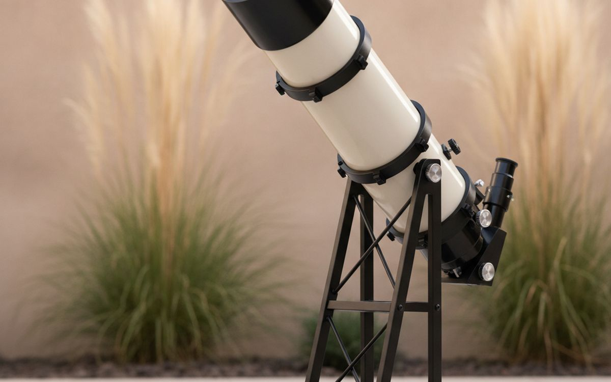
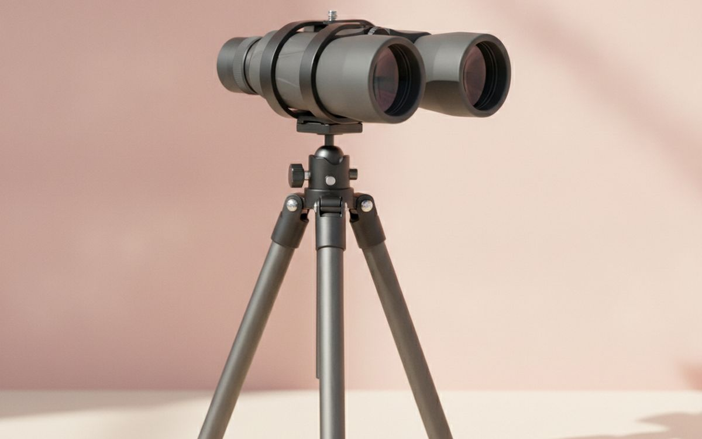
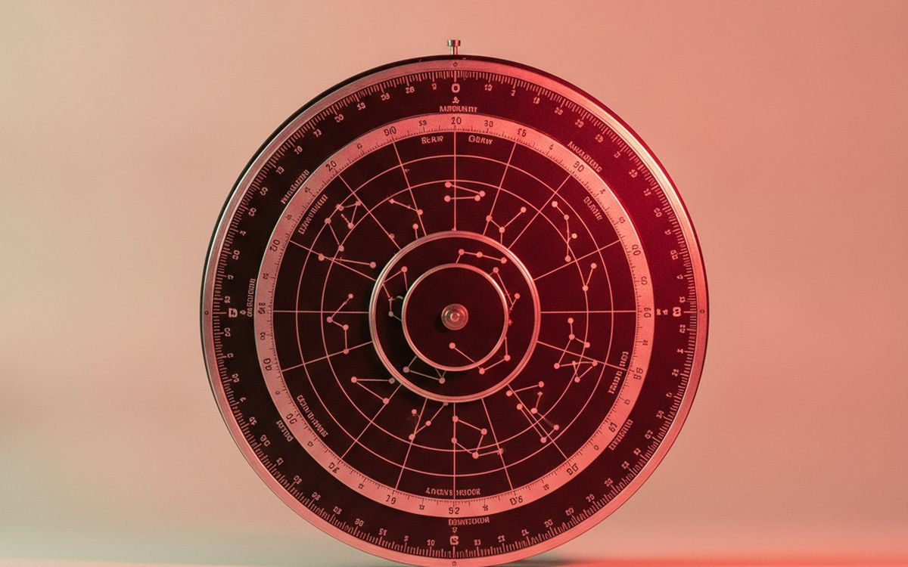
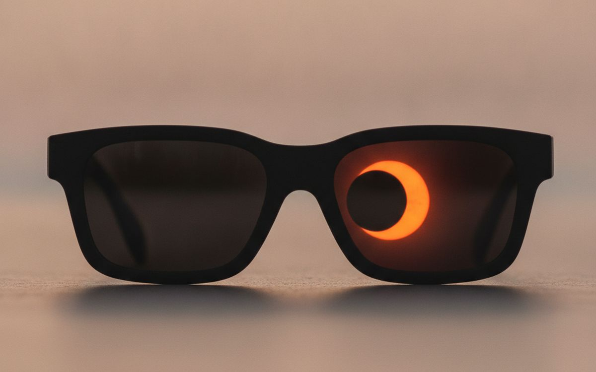

The classic beginner astronomy mistake is buying a cheap telescope from a department store. It wobbles, the magnification claims are fantasy, and finding anything with it is so frustrating it ends up in the garage within a month. The night sky is best learned with your eyes, an app and a pair of binoculars first.
This list is ordered by how much more of the sky each item opens up for the money. Several cost nothing. The telescope comes in when you know what you want to look at.
Prices below are approximate street prices at the time of writing and move around constantly, especially during sale events. Treat them as a rough band for budgeting, not a quote. Always check the live listing before you buy.
The short version
7x50 or 10x50 binoculars
The first thing to buy
Disclosure. The links on this page are affiliate links. If you buy through one we may earn a commission at no extra cost to you. It does not affect what makes this list or the order it is in.
How we picked
These picks come from astronomy clubs, published equipment reviews and long-run owner reports, cross-checked against current retail listings. We have not personally tested every item here. Never look at the Sun through binoculars or a telescope without a certified solar filter.
At a glance
Prices are approximate at the time of writing and change often.
The picks

01 · The first thing to buy7x50 or 10x50 binoculars
Binoculars show the Moon's craters, Jupiter's moons, star clusters and the Andromeda galaxy, and they are easy to use from the first night. The numbers mean magnification and lens size in millimetres; 50mm lenses gather plenty of light. 7x50 is easier to hold steady; 10x50 shows more detail. Look for fully multi-coated lenses and BaK-4 prisms. They are useful for birds and travel too. The case for it: easy to use from day one, shows far more than your eyes alone, and useful for other hobbies. The trade-off is real: hard to hold steady for long and cheap pairs have blurry edges, so weigh that against how often it would actually get used.
$50-150Trade-off: Hard to hold steady for long
Why it is here
- Easy to use from day one
- Shows far more than your eyes alone
- Useful for other hobbies
Worth knowing
- Hard to hold steady for long
- Cheap pairs have blurry edges

02 · Knowing what you are looking atA star chart app
Point your phone at the sky and apps like Stellarium, SkySafari or Star Walk show what you are looking at: planets, constellations and satellites. It turns random dots into things you can name and find again. Many are free. Turn on night mode so the screen glows red. The case for it: identifies what you see, shows planets and the ISS, and free or cheap. The trade-off is real: bright screens ruin night vision and compass can be inaccurate near metal, so weigh that against how often it would actually get used.
Free-$10Trade-off: Bright screens ruin night vision
Why it is here
- Identifies what you see
- Shows planets and the ISS
- Free or cheap
Worth knowing
- Bright screens ruin night vision
- Compass can be inaccurate near metal

03 · Keeping night visionA red flashlight or headlamp
Your eyes take 20-30 minutes to adjust fully to the dark, and one flash of white light resets them. Red light lets you read charts and find things without losing night vision. A headlamp with a red mode keeps your hands free. It is a small thing that makes a big difference. The case for it: keeps night vision, hands-free, and cheap. The trade-off is real: must avoid switching to white by mistake and very bright red still affects vision, so weigh that against how often it would actually get used. Priced around $10-20, it is easy to justify even if it only ends up getting occasional rather than daily use.
$10-20Trade-off: Must avoid switching to white by mistake
Why it is here
- Keeps night vision
- Hands-free
- Cheap
Worth knowing
- Must avoid switching to white by mistake
- Very bright red still affects vision

04 · Seeing far more starsA light pollution map and a dark sky trip
From a city you might see a few dozen stars. From a dark site, thousands, plus the Milky Way. Free light pollution maps show dark areas near you, and many state parks are certified dark sky places. Plan around a new moon for the darkest skies. This costs only fuel and gives the best views of anything on this list. The case for it: dramatically more stars, free, and makes every other tool work better. The trade-off is real: requires travel and check park hours and weather, so weigh that against how often it would actually get used.
Free ($0)Trade-off: Requires travel
Why it is here
- Dramatically more stars
- Free
- Makes every other tool work better
Worth knowing
- Requires travel
- Check park hours and weather

05 · Comfort while looking upA reclining camping chair
Looking straight up for an hour hurts your neck. A reclining camping chair or zero-gravity chair lets you scan the sky comfortably, and it is perfect with binoculars. Bring a blanket; nights get cold even in summer. The case for it: comfortable for long sessions, great with binoculars, and doubles as a garden chair. The trade-off is real: bulky to carry and metal frames get cold, so weigh that against how often it would actually get used. For $30-70, it is a small, low-risk addition to the list rather than a centrepiece purchase you need to think hard about.
$30-70Trade-off: Bulky to carry
Why it is here
- Comfortable for long sessions
- Great with binoculars
- Doubles as a garden chair
Worth knowing
- Bulky to carry
- Metal frames get cold

06 · A first telescope that worksA tabletop Dobsonian telescope
If you want a telescope, a tabletop Dobsonian reflector is the best starter. It has a large mirror for the price, a simple point-and-look mount with no complex setup, and it shows Saturn's rings, Jupiter's cloud bands and lunar detail. The Zhumell Z114 and similar models are popular. Ignore any telescope sold on its magnification; aperture, the mirror size, is what matters. The case for it: big aperture for the price, simple to use, and portable. The trade-off is real: needs a stable table and mirrors need occasional alignment, so weigh that against how often it would actually get used.
$150-250Trade-off: Needs a stable table
Why it is here
- Big aperture for the price
- Simple to use
- Portable
Worth knowing
- Needs a stable table
- Mirrors need occasional alignment

07 · Serious beginnersA full-size 6-8 inch Dobsonian
A 6 or 8-inch Dobsonian is what astronomy clubs recommend most. It gathers enough light to show galaxies and nebulae from dark sites, and planets in real detail. It is big and heavy but easy to use. Buy it when you know you enjoy the hobby. Shipping large telescopes can be expensive, so check the total cost. The case for it: excellent views for the money, simple mount, and a telescope for years. The trade-off is real: large and heavy and shipping can be costly, so weigh that against how often it would actually get used.
$350-600Trade-off: Large and heavy
Why it is here
- Excellent views for the money
- Simple mount
- A telescope for years
Worth knowing
- Large and heavy
- Shipping can be costly

08 · Steadier viewsA binocular tripod adapter
Handheld binoculars shake, especially at 10x. A cheap adapter mounts them on any camera tripod for steady views, which shows much more detail. Check your binoculars have a tripod socket, usually hidden under a cap at the front hinge. The case for it: rock-steady views, cheap, and works with a normal camera tripod. The trade-off is real: needs a tripod and awkward for overhead viewing, so weigh that against how often it would actually get used. For $15-30, it is a small, low-risk addition to the list rather than a centrepiece purchase you need to think hard about.
$15-30Trade-off: Needs a tripod
Why it is here
- Rock-steady views
- Cheap
- Works with a normal camera tripod
Worth knowing
- Needs a tripod
- Awkward for overhead viewing

09 · Learning constellations offlineA planisphere
A planisphere is a rotating star chart you set to the date and time. It needs no batteries, does not ruin your night vision, and teaches constellations in a way apps do not. Buy one for your latitude. It makes a lovely gift for kids. The case for it: no batteries or screens, teaches the sky, and great for kids. The trade-off is real: latitude-specific and harder to read than an app at first, so weigh that against how often it would actually get used. Priced around $10-20, it is easy to justify even if it only ends up getting occasional rather than daily use.
$10-20Trade-off: Latitude-specific
Why it is here
- No batteries or screens
- Teaches the sky
- Great for kids
Worth knowing
- Latitude-specific
- Harder to read than an app at first

10 · Looking at the Sun safelyCertified solar eclipse glasses
Looking at the Sun without proper protection can cause permanent eye damage, and normal sunglasses do not protect you. Eclipse glasses that meet the ISO 12312-2 standard, from reputable suppliers listed by the American Astronomical Society, are safe for direct viewing. Never use them with binoculars or telescopes; those need special solar filters. The case for it: safe viewing of eclipses and sunspots, cheap, and required for any solar viewing. The trade-off is real: fake glasses are sold around eclipses and never use with optics, so weigh that against how often it would actually get used.
$10-20Trade-off: Fake glasses are sold around eclipses
Why it is here
- Safe viewing of eclipses and sunspots
- Cheap
- Required for any solar viewing
Worth knowing
- Fake glasses are sold around eclipses
- Never use with optics
Common questions
Should I buy a telescope or binoculars first?
Binoculars. They are easier to use and help you learn the sky. Buy a telescope once you know what you want to see.
What magnification do I need?
Ignore magnification claims. Aperture, the size of the lens or mirror, matters much more.
Can I see anything from the city?
Yes: the Moon, planets and bright stars. For galaxies and the Milky Way, go somewhere dark.
When is the best time to stargaze?
Around the new moon, on a clear night, after your eyes have adjusted for 20-30 minutes.
Today's deals
See what is discounted right now.
Deals →← All guides
As an AliExpress affiliate we earn from qualifying purchases. Prices and availability are accurate as of the date of publication and may change.